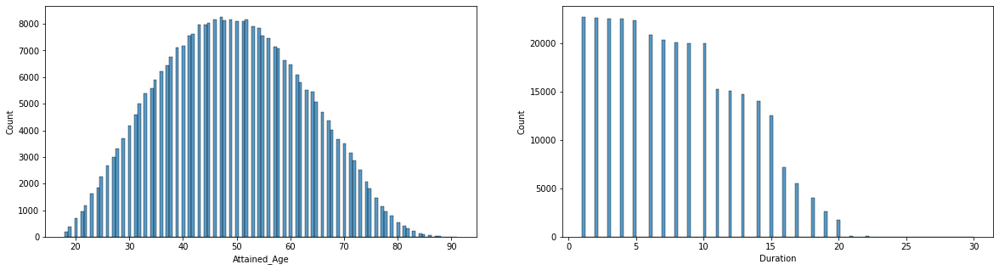
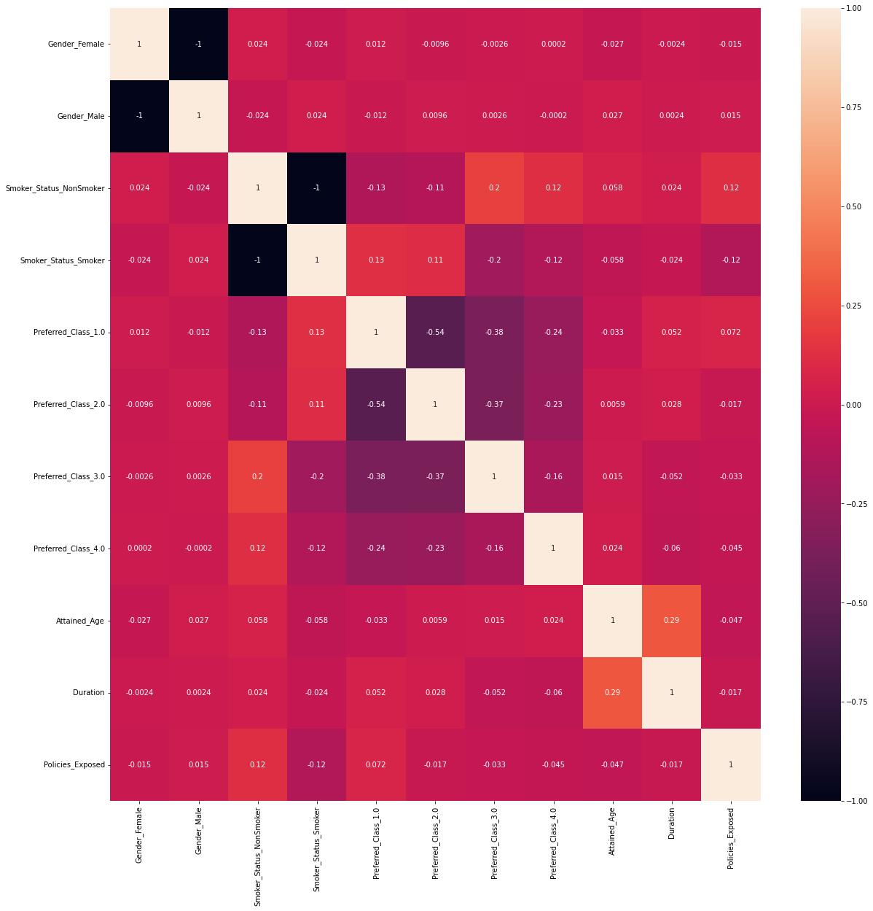
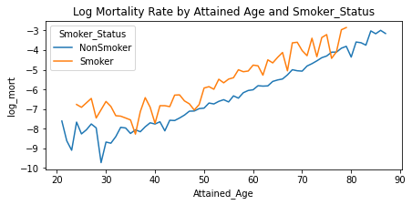
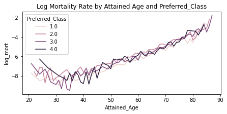
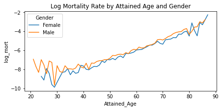
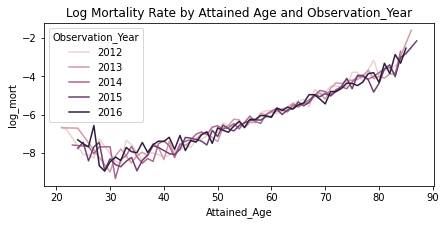

import warnings
warnings.filterwarnings('ignore')
import pandas as pd
import numpy as np
import random
import seaborn as sns
from matplotlib import pyplot as plt
import sklearn
from sklearn import preprocessing
import statsmodels.api as sm
import statsmodels.formula.api as smf
import os
import xgboost as xgbIntroduction
Executive Summary
Being able to make accurate and timely estimates of future claims is a fundamental task for actuaries. Questions of profitability, product competitiveness, and insurer solvency depend on understanding future claims, with mortality being one of the central issues facing a life insurer.
In this demo, we show an example of a machine learning application on mortality assumption setting, a classic life insurance problem. Using real mortality data collected by the Society of Actuaries, we will walk you through the process of model building and validation.
Overview of Mortality Case Study
Case Study Data
Our dataset is the composite mortality experience data at policy level from 2012 to 2016. This dataset is used to published the 2016 Individual Life Experience Report by SOA’s Individual Life Experience Committee (ILEC).
For the case study, the data was restricted to term life insurance policies that were within the initial policy term, issued after 1980, and the issue age was at least 18 years old.
More details on this dataset can be found in Section 2 of the data report https://www.soa.org/49957f/globalassets/assets/files/resources/research-report/2021/2016-individual-life-report.pdf
Case Study Model
For the case study in this paper, we used the statsmodel’s implementation of the GLM family models. Our main model is using Poisson distribution with log link function that is often used for mortality prediction.
The response variable used in this case study is the number of deaths. Policies exposed was used as a weight in the model. We also tried to fit the mortality rate, which is number of deaths/ policies exposed using Gaussian distribution with log link, that can be found in the Appendix
The features used in the mortality model are:
Attained Age– the sum of the policyholder’s age at policy issue and the number of years they have held the policy.Duration– the number of years (starting with a value of one) the policyholder has had the policy.Smoking Status– if the policyholder is considered a smoker or not.Preferred Class– an underwriting structure used by insurers to classify and price policyholders. Different companies have different structures with the number of classes ranging from two to four. The lower the class designation, the healthier the policyholders who are put into that class. Thus, someone in class 1 of 3 (displayed as 1_3 in this paper) is considered healthier at time of issue than someone in class 3 of 3.Gender– A categorical feature in the model with two levels, male and female.Guaranteed Term Period– the length of the policy at issue during which the premium will remain constant regardless of policyholder behavior or health status. The shortest term period in the data is five years with increasing lengths by five years up to 30 years. Term period is used as a categorical feature with six levels.Face_Amount_BandObservation Year
Set Up
First, let’s download data directly from the SOA website and unzip. This might take 5-10 minutes due to the large size of the file.
# directly curl from the SOA website and unzip
! echo Working Directory = $(pwd)
! if [ -d "./Data" ]; then echo "Data folder already exists"; else echo "Create Data folder"; mkdir Data; fi
! if [ -f "./Data/ILEC 2009-16 20200123.csv" ]; then echo "File already exists"; else echo "Download data .."; curl https://cdn-files.soa.org/web/ilec-2016/ilec-data-set.zip --output ./Data/ilec-data-set.zip; echo "Unzip data .."; unzip ./Data/ilec-data-set.zip -d ./Data; fi
! echo "Done"Working Directory = /Users/andres/code/validmind-sdk/notebooks/insurance_mortality
Data folder already exists
File already exists
DoneSecond, sample 5% from the giant file. Another 10 minutes or so the first time you run it :)
#sample 5% and save it out to a sample file
if not os.path.exists('./Data/ILEC 2009-16 20200123 sample.csv'):
p = 0.05
random.seed(42)
sample = pd.read_csv('./Data/ILEC 2009-16 20200123.csv',
skiprows = lambda i: i>0 and random.random() >p)
sample.to_csv('./Data/ILEC 2009-16 20200123 sample.csv', index = False)EDA
# load sample file
sample_df = pd.read_csv('./Data/ILEC 2009-16 20200123 sample.csv',
usecols = ['Observation_Year', 'Gender', 'Smoker_Status',
'Insurance_Plan', 'Duration', 'Attained_Age', 'SOA_Guaranteed_Level_Term_Period',
'Face_Amount_Band', 'Preferred_Class',
'Number_Of_Deaths','Policies_Exposed',
'SOA_Anticipated_Level_Term_Period','SOA_Post_level_Term_Indicator',
'Expected_Death_QX2015VBT_by_Policy',
'Issue_Age', 'Issue_Year'])
# target variable
sample_df['mort'] = sample_df['Number_Of_Deaths'] / sample_df['Policies_Exposed']
sample_df.head()| Observation_Year | Gender | Smoker_Status | Insurance_Plan | Issue_Age | Duration | Attained_Age | Face_Amount_Band | Issue_Year | Preferred_Class | SOA_Anticipated_Level_Term_Period | SOA_Guaranteed_Level_Term_Period | SOA_Post_level_Term_Indicator | Number_Of_Deaths | Policies_Exposed | Expected_Death_QX2015VBT_by_Policy | mort | |
|---|---|---|---|---|---|---|---|---|---|---|---|---|---|---|---|---|---|
| 0 | 2009 | Female | NonSmoker | Perm | 0 | 1 | 0 | 10000-24999 | 2008 | NaN | N/A (Not Term) | N/A (Not Term) | N/A (Not Term) | 0 | 4.882191 | 0.001074 | 0.0 |
| 1 | 2009 | Female | NonSmoker | Perm | 0 | 1 | 0 | 500000-999999 | 2008 | NaN | N/A (Not Term) | N/A (Not Term) | N/A (Not Term) | 0 | 25.795943 | 0.006449 | 0.0 |
| 2 | 2009 | Female | NonSmoker | Perm | 0 | 2 | 1 | 10000-24999 | 2008 | NaN | N/A (Not Term) | N/A (Not Term) | N/A (Not Term) | 0 | 1.117809 | 0.000134 | 0.0 |
| 3 | 2009 | Female | NonSmoker | Perm | 0 | 2 | 1 | 250000-499999 | 2008 | NaN | N/A (Not Term) | N/A (Not Term) | N/A (Not Term) | 0 | 70.098636 | 0.009814 | 0.0 |
| 4 | 2009 | Female | NonSmoker | Perm | 0 | 4 | 3 | 50000-99999 | 2006 | NaN | N/A (Not Term) | N/A (Not Term) | N/A (Not Term) | 0 | 493.523281 | 0.034547 | 0.0 |
# filter pipeline
sample_df = sample_df[(sample_df.Expected_Death_QX2015VBT_by_Policy != 0)
& (sample_df.Smoker_Status != 'Unknown')
& (sample_df.Insurance_Plan == ' Term')
& (-sample_df.Preferred_Class.isna())
& (sample_df.Attained_Age >= 18)
& (sample_df.Issue_Year >= 1980)
& (sample_df.SOA_Post_level_Term_Indicator == "Within Level Term")
& (sample_df.SOA_Anticipated_Level_Term_Period != "Unknown")
& (sample_df.mort < 1)]
print(f'Count: {sample_df.shape[0]}')
print()
# describe data
sample_df.describe()Count: 307233
| Observation_Year | Issue_Age | Duration | Attained_Age | Issue_Year | Preferred_Class | Number_Of_Deaths | Policies_Exposed | Expected_Death_QX2015VBT_by_Policy | mort | |
|---|---|---|---|---|---|---|---|---|---|---|
| count | 307233.000000 | 307233.000000 | 307233.000000 | 307233.000000 | 307233.000000 | 307233.000000 | 307233.000000 | 307233.000000 | 3.072330e+05 | 307233.000000 |
| mean | 2014.084001 | 42.248505 | 7.951434 | 49.199939 | 2006.640537 | 2.035013 | 0.018514 | 12.504679 | 1.932158e-02 | 0.001627 |
| std | 1.413654 | 12.777574 | 4.793230 | 13.340539 | 4.888334 | 0.962332 | 0.147063 | 29.112019 | 5.412559e-02 | 0.023061 |
| min | 2012.000000 | 18.000000 | 1.000000 | 18.000000 | 1984.000000 | 1.000000 | 0.000000 | 0.002732 | 1.918000e-07 | 0.000000 |
| 25% | 2013.000000 | 32.000000 | 4.000000 | 39.000000 | 2003.000000 | 1.000000 | 0.000000 | 0.838356 | 7.766577e-04 | 0.000000 |
| 50% | 2014.000000 | 42.000000 | 7.000000 | 49.000000 | 2007.000000 | 2.000000 | 0.000000 | 2.612022 | 3.316641e-03 | 0.000000 |
| 75% | 2015.000000 | 52.000000 | 12.000000 | 59.000000 | 2011.000000 | 3.000000 | 0.000000 | 10.680379 | 1.470165e-02 | 0.000000 |
| max | 2016.000000 | 84.000000 | 30.000000 | 91.000000 | 2016.000000 | 4.000000 | 6.000000 | 655.938021 | 2.827005e+00 | 0.981233 |
# Encode categorical variables
cat_vars = ['Observation_Year',
'Gender',
'Smoker_Status',
'Face_Amount_Band',
'Preferred_Class',
'SOA_Anticipated_Level_Term_Period']
onehot = preprocessing.OneHotEncoder()
results = onehot.fit_transform(sample_df[cat_vars]).toarray()
cat_vars_encoded = list(onehot.get_feature_names_out())
sample_df = pd.concat([sample_df,pd.DataFrame(data = results, columns = cat_vars_encoded, index = sample_df.index)], axis = 1)# categorical variables
face_amount_order = [' 1-9999', ' 10000-24999', ' 25000-49999', ' 50000-99999',' 100000-249999' , ' 250000-499999',' 500000-999999',' 1000000-2499999', ' 2500000-4999999',' 5000000-9999999', '10000000+']
term_period_order = [' 5 yr guaranteed', '10 yr guaranteed', '15 yr guaranteed', '20 yr guaranteed', '25 yr guaranteed','30 yr guaranteed']
fig, ax = plt.subplots(4,2, figsize = (20,30))
ax = ax.flatten()
for i,column in enumerate(['Observation_Year', 'Gender', 'Smoker_Status', 'Insurance_Plan',
'Face_Amount_Band', 'Preferred_Class',
'SOA_Guaranteed_Level_Term_Period']):
if column == 'Face_Amount_Band':
order = face_amount_order
elif column == 'SOA_Guaranteed_Level_Term_Period':
order = term_period_order
else:
order = None
sns.countplot(y = sample_df[column], ax = ax[i], orient = 'h', order = order)
plt.show()
# age and duration variables
fig, ax = plt.subplots(1,2, figsize = (20,5))
sns.histplot(x = sample_df['Attained_Age'], ax = ax[0])
sns.histplot(x = sample_df['Duration'], ax = ax[1])
plt.show()
# we quickly check for any collinearity
fig, ax = plt.subplots(figsize = (20,20))
sns.heatmap(sample_df[['Gender_Female','Gender_Male','Smoker_Status_NonSmoker','Smoker_Status_Smoker','Preferred_Class_1.0','Preferred_Class_2.0','Preferred_Class_3.0','Preferred_Class_4.0','Attained_Age', 'Duration', 'Policies_Exposed']].corr(), annot=True)
plt.show()
# log mort by Attained Age
def stratify(field):
fig, ax = plt.subplots(figsize = (7,3))
temp = sample_df.groupby(['Attained_Age', field])[['Number_Of_Deaths', 'Policies_Exposed']].sum().reset_index()
temp['log_mort'] = (temp.Number_Of_Deaths / temp.Policies_Exposed).apply(np.log)
sns.lineplot(data = temp, x = 'Attained_Age', y = 'log_mort', hue = field, ax = ax)
plt.title(f'Log Mortality Rate by Attained Age and {field}')
plt.show()
stratify('Smoker_Status')
stratify('Preferred_Class')
stratify('Gender')
stratify('Observation_Year')



Modeling
Train/test split
First we split the data into 80% for training and 20% for testing.
In this context because we don’t really need to do hyperparameter tuning so it’s not necessary to create a validation set.
# create training (80%), validation (5%) and test set (15%)
random_seed = 0
train_df = sample_df.sample(frac = 0.8, random_state = random_seed)
test_df = sample_df.loc[~sample_df.index.isin(train_df.index),:]
# add constant variable
train_df['Const'] = 1
test_df['Const'] = 1
print(f'Train size: {train_df.shape[0]}, test size: {test_df.shape[0]}')Train size: 245786, test size: 61447train_df.to_csv('train_df.csv', index = False)
test_df.to_csv('test_df.csv', index = False)GLM modeling 101
In a generalized linear model (GLM), each outcome Y of the dependent variables is assumed to be generated from a particular distribution in an exponential family, a large class of probability distributions that includes the normal, binomial, Poisson and gamma distributions, among others. The mean, \(μ\), of the distribution depends on the independent variables, X, through
\({\displaystyle \operatorname {E} (\mathbf {Y} |\mathbf {X} )={\boldsymbol {\mu }}=g^{-1}(\mathbf {X} {\boldsymbol {\beta }})}\)
where:
- \(E(Y|X)\) is the expected value of \(Y\) conditional on \(X\)
- \(Xβ\) is the linear predictor, a linear combination of unknown parameters \(β\)
- \(g\) is the link function.
Model 1: Poisson distribution with log link on count
Target Variable = [Number_Of_Deaths]
Input Variables = [Observation_Year, Gender, Smoker_Status, Face_Amount_Band, Preferred_Class, Attained_Age, Duration, SOA_Anticipated_Level_Term_Period]
As the target variable is a count measure, we will fit GLM with Poisson distribution and log link.
The target variable is count, what we really fit the Poisson model to is mortality rate (count/exposure) with the use of offset. This is a common practice according to https://en.wikipedia.org/wiki/Poisson_regression
model1 = smf.glm(formula = 'Number_Of_Deaths ~ 1 + C(Observation_Year)+ C(Gender) + C(Smoker_Status) + C(Face_Amount_Band) + C(Preferred_Class) + C(SOA_Anticipated_Level_Term_Period) \
+ Attained_Age + Duration',
data = train_df,
family=sm.families.Poisson(sm.families.links.log()),
freq_weights = train_df['Policies_Exposed'],
offset = train_df['Policies_Exposed'].apply(lambda x: np.log(x))
)
res1 = model1.fit()
res1.summary()| Dep. Variable: | Number_Of_Deaths | No. Observations: | 245786 |
|---|---|---|---|
| Model: | GLM | Df Residuals: | 3076911.54 |
| Model Family: | Poisson | Df Model: | 26 |
| Link Function: | log | Scale: | 1.0000 |
| Method: | IRLS | Log-Likelihood: | -7.1471e+05 |
| Date: | Mon, 05 Dec 2022 | Deviance: | 9.8740e+05 |
| Time: | 22:28:25 | Pearson chi2: | 3.17e+06 |
| No. Iterations: | 24 | Pseudo R-squ. (CS): | 0.6540 |
| Covariance Type: | nonrobust |
| coef | std err | z | P>|z| | [0.025 | 0.975] | |
|---|---|---|---|---|---|---|
| Intercept | -9.2794 | 0.158 | -58.838 | 0.000 | -9.589 | -8.970 |
| C(Observation_Year)[T.2013] | -0.0545 | 0.007 | -8.190 | 0.000 | -0.067 | -0.041 |
| C(Observation_Year)[T.2014] | -0.0051 | 0.006 | -0.789 | 0.430 | -0.018 | 0.008 |
| C(Observation_Year)[T.2015] | -0.1405 | 0.007 | -20.705 | 0.000 | -0.154 | -0.127 |
| C(Observation_Year)[T.2016] | -0.0813 | 0.007 | -12.377 | 0.000 | -0.094 | -0.068 |
| C(Gender)[T.Male] | 0.3527 | 0.005 | 74.784 | 0.000 | 0.343 | 0.362 |
| C(Smoker_Status)[T.Smoker] | 1.0350 | 0.015 | 67.166 | 0.000 | 1.005 | 1.065 |
| C(Face_Amount_Band)[T. 10000-24999] | -0.7187 | 0.118 | -6.104 | 0.000 | -0.949 | -0.488 |
| C(Face_Amount_Band)[T. 25000-49999] | -0.7632 | 0.117 | -6.500 | 0.000 | -0.993 | -0.533 |
| C(Face_Amount_Band)[T. 50000-99999] | -0.9776 | 0.117 | -8.372 | 0.000 | -1.206 | -0.749 |
| C(Face_Amount_Band)[T. 100000-249999] | -1.6819 | 0.116 | -14.452 | 0.000 | -1.910 | -1.454 |
| C(Face_Amount_Band)[T. 250000-499999] | -2.0061 | 0.116 | -17.222 | 0.000 | -2.234 | -1.778 |
| C(Face_Amount_Band)[T. 500000-999999] | -2.0428 | 0.117 | -17.521 | 0.000 | -2.271 | -1.814 |
| C(Face_Amount_Band)[T. 1000000-2499999] | -2.0690 | 0.117 | -17.721 | 0.000 | -2.298 | -1.840 |
| C(Face_Amount_Band)[T. 2500000-4999999] | -2.0173 | 0.138 | -14.656 | 0.000 | -2.287 | -1.747 |
| C(Face_Amount_Band)[T. 5000000-9999999] | -2.0177 | 0.229 | -8.795 | 0.000 | -2.467 | -1.568 |
| C(Face_Amount_Band)[T.10000000+] | -23.7738 | 1.48e+04 | -0.002 | 0.999 | -2.89e+04 | 2.89e+04 |
| C(Preferred_Class)[T.2.0] | 0.4593 | 0.005 | 94.004 | 0.000 | 0.450 | 0.469 |
| C(Preferred_Class)[T.3.0] | 0.4168 | 0.007 | 60.272 | 0.000 | 0.403 | 0.430 |
| C(Preferred_Class)[T.4.0] | 0.5337 | 0.011 | 48.013 | 0.000 | 0.512 | 0.555 |
| C(SOA_Anticipated_Level_Term_Period)[T.10 yr anticipated] | -0.1692 | 0.105 | -1.607 | 0.108 | -0.376 | 0.037 |
| C(SOA_Anticipated_Level_Term_Period)[T.15 yr anticipated] | -0.2569 | 0.105 | -2.438 | 0.015 | -0.463 | -0.050 |
| C(SOA_Anticipated_Level_Term_Period)[T.20 yr anticipated] | -0.4042 | 0.105 | -3.844 | 0.000 | -0.610 | -0.198 |
| C(SOA_Anticipated_Level_Term_Period)[T.25 yr anticipated] | 0.0217 | 0.106 | 0.205 | 0.838 | -0.186 | 0.229 |
| C(SOA_Anticipated_Level_Term_Period)[T.30 yr anticipated] | -0.2437 | 0.105 | -2.314 | 0.021 | -0.450 | -0.037 |
| Attained_Age | 0.0739 | 0.000 | 254.173 | 0.000 | 0.073 | 0.075 |
| Duration | 0.0497 | 0.001 | 92.131 | 0.000 | 0.049 | 0.051 |
res1.predict(exog = train_df)1283609 0.000487
914790 0.000164
1468496 0.004144
1515604 0.000442
1073383 0.001613
...
1313854 0.010491
1004151 0.000598
1354488 0.000129
1040410 0.001310
1226199 0.000978
Length: 245786, dtype: float64res1.save('res1.pkl')res1.predict(exog = train_df)1283609 0.000487
914790 0.000164
1468496 0.004144
1515604 0.000442
1073383 0.001613
...
1313854 0.010491
1004151 0.000598
1354488 0.000129
1040410 0.001310
1226199 0.000978
Length: 245786, dtype: float64loaded = sm.load('res1.pkl')fitted = loaded.model.fit()fitted.predict(train_df)1283609 0.000487
914790 0.000164
1468496 0.004144
1515604 0.000442
1073383 0.001613
...
1313854 0.010491
1004151 0.000598
1354488 0.000129
1040410 0.001310
1226199 0.000978
Length: 245786, dtype: float64fitted.params["Intercept"]-9.279412567322963First, we show the lift chart that breaks down the predicted mortality rates into deciles and show how the actual compares against the predicted rates for each decile. Looks like the predicted are not too far off on the test set, but then we’re only look at the high-level average for each decile.
# append fitted values for training and predicted values for testing
train_df['mort_hat1'] = res1.predict(exog = train_df)
train_df['death_hat1'] = train_df['mort_hat1'] * train_df['Policies_Exposed']
test_df['mort_hat1'] = res1.predict(exog = test_df)
test_df['death_hat1'] = test_df['mort_hat1'] * test_df['Policies_Exposed']
# groupby and aggregate by deciles
test_df['deciles'] = pd.qcut(test_df['mort_hat1'], 10, labels=range(1, 11))
wm = lambda x: np.average(x, weights=test_df.loc[x.index, "Policies_Exposed"])
temp = test_df.groupby(["deciles"]).agg(actual=("mort_hat1", wm), predicted = ('mort', wm))
temp
# lift chart
fig, ax = plt.subplots(figsize = (7,3))
temp.plot(ax = ax)
plt.title('Actual vs predicted mortality rate by deciles')
plt.show() Second, we can plot the partial dependency chart between the log mortality rate and key covariates like Attained Age or Duration to see more granular comparisons between actual vs predicted.
We can immediately see that even on the train set, the model does not capture the dynamics near the two tails of the age distribution very well.
def pdp(df, agg_field, title, predict_col = 'death_hat1'):
agg = df.groupby(agg_field)['Number_Of_Deaths', predict_col, 'Policies_Exposed'].sum().reset_index()
agg['log_mort'] = (agg['Number_Of_Deaths']/agg['Policies_Exposed']).apply(lambda x: np.log(x))
agg['log_mort_predicted'] = (agg[predict_col]/agg['Policies_Exposed']).apply(lambda x: np.log(x))
fig, ax = plt.subplots(figsize = (7,3))
ax.plot(agg[agg_field], agg['log_mort'], color = 'r')
ax.plot(agg[agg_field], agg['log_mort_predicted'], color = 'b')
plt.legend(['actual','predicted'])
plt.xlabel(agg_field)
plt.ylabel('log_mort')
plt.title(title)
plt.show()
pdp(train_df, 'Attained_Age', 'How well does the model fit the train set')
pdp(train_df, 'Duration', 'How well does the model fit the train set')pdp(test_df, 'Attained_Age', 'How well does the model fit the test set')
pdp(test_df, 'Duration', 'How well does the model fit the test set')Third, we look at Prediction Error by taking the difference between the Number Of Deaths (actual) and Predicted Number of Deaths and then normalized by Policies Exposed. This tells the same story as the dependecy chart that we have a lot of errors near the two tails of the age distribution.
fig, ax = plt.subplots(figsize = (7,3))
train_df['Err1'] = (train_df['death_hat1'] - train_df['Number_Of_Deaths'].astype(float)).apply(lambda x: x**2)/ train_df['death_hat1']
agg = train_df.groupby('Attained_Age')['Err1', 'Policies_Exposed'].sum().reset_index()
sns.lineplot(x = agg['Attained_Age'], y = np.sqrt(agg['Err1']/agg['Policies_Exposed']), ax = ax)
plt.legend(['Model 1'])
plt.ylabel('Error')
plt.title('Training Error')
plt.show()
fig, ax = plt.subplots(figsize = (7,3))
test_df['Err1'] = (test_df['death_hat1'] - test_df['Number_Of_Deaths'].astype(float)).apply(lambda x: x**2)/ test_df['death_hat1']
agg = test_df.groupby('Attained_Age')['Err1', 'Policies_Exposed'].sum().reset_index()
sns.lineplot(x = agg['Attained_Age'], y = np.sqrt(agg['Err1']/agg['Policies_Exposed']))
plt.legend(['Model 1'])
plt.ylabel('Error')
plt.title('Testing error')
plt.show()Validation
1. Goodness of Fit
Pseudo R-squared
In linear regression, the squared multiple correlation, R-squared is often used to assess goodness of fit as it represents the proportion of variance in the criterion that is explained by the predictors.
For GLM, pseudo R-squared is the most analogous measure to the squared multiple correlations. It represents the proportional reduction in the deviance wherein the deviance is treated as a measure of variation analogous but not identical to the variance in linear regression analysis. Quantifiably, the higher is better.
res1.pseudo_rsquared()Deviance
The (total) deviance for a model M with estimates \({\displaystyle {\hat {\mu }}=E[Y|{\hat {\theta }}_{0}]}\), based on a dataset y, may be constructed by its likelihood as:
Here \(\hat \theta_0\) denotes the fitted values of the parameters in the model M, while \(\hat \theta_s\) denotes the fitted parameters for the saturated model: both sets of fitted values are implicitly functions of the observations y.
In large samples, deviance follows a chi-square distribution with n−p degrees of freedom, where n is the number of observations and p is the number of parameters in the model. The null hypothesis, H0, is that the model fits. The alternative hypothesis, H1, is that the model does not fit. A deviance much higher than n−p indicates the model is a poor fit to the data. Quantifiably, smaller is always better: The smaller the deviance, the better the fit of the model.
Here we divided the deviance by the residual degree of freedom and observed a ratio much smaller than 1
res1.deviance/res1.df_residPearson Statistic and dispersion
Similar to deviance test, the Pearson Statistic is approximately chi-square distributed with n – p degrees of freedom. A Pearson Statistic much higher than the degree of freedom indicates that the model is a poor fit.
Additionally, for a Poisson distribution, the mean and the variance are equal. In addition to testing goodness-of-fit, the Pearson statistic can also be used as a test of overdispersion. Overdispersion means that the actual covariance matrix for the observed data exceeds that for the specified model for Y|X.
Here we divided the pearson statistic by the residual degree of freedom and observed a value very close to 1
res1.pearson_chi2/res1.df_resid2. Feature importance
Confidence intervals and p-values
Confidence intervals and p-values quantifying the statistical significance of individual predictor variables. Unlike other models like XGBoost, the estimates for statistical significance of individual predictor variables are readily available.
res1.summary()From the summary, we can see that all of the features other than SOA_Anticipated_Level_Term_Period are significant as all p-values are < 5%.
Directionally, the coeficients for the main features like Gender, Smoking Status, Attained_Age or Duration are all aligned with our intuition and the EDA charts that we created previously:
- Mortality rate for Male is higher than Female
- Mortality rate for Smoker is higher than non-Smoker
- Mortality rate is higher as age is higher
- Mortality rate is higher as duration is longer
3. Main Effects
We want to understand the individual effects for each feature in the model. In a GLM context, the coefficient value of each feature already made it easy to understand the direction, magnitude, and shape of a feature’s effect on the predicted value. We can take this further by producing the partial dependence plots (PDP) that display partial dependencies of predicted mortality in terms of key covariates. Within each visualization, the projections are averaged over all covariates not included and over all predicted rows to provide an average representation of the full data set given.
def pdp2(df, x, hue, predict_col = 'death_hat1'):
agg = df.groupby([x, hue])['Number_Of_Deaths', predict_col, 'Policies_Exposed'].sum().reset_index()
agg['log_mort_predicted'] = (agg[predict_col]/agg['Policies_Exposed']).apply(lambda x: np.log(x))
fig, ax = plt.subplots(figsize = (6,3))
sns.lineplot(data = agg, x = x, y = 'log_mort_predicted', hue = hue, ax = ax)
plt.xlabel(x)
plt.ylabel('log_mort')
plt.title(f'Log mortality by {x} and {hue}')
plt.show()
pdp2(train_df, 'Attained_Age', 'Gender')
pdp2(train_df, 'Duration', 'Gender')
pdp2(train_df, 'Attained_Age', 'Smoker_Status')
pdp2(train_df, 'Duration', 'Smoker_Status')
pdp2(train_df, 'Attained_Age', 'Preferred_Class')
pdp2(train_df, 'Duration', 'Preferred_Class')We can see that the partial dependency plots reconfirms the directional relationships between important covariates and the output that we have discussed in part 2. Feature Importances
Additionally, the charts reflect that fact that we have not included any interactions between the covariates. Look at the difference in mortality between smoking and non-smokingm for example, it’s almost constant regardless of ages.
4. Interaction Effects
One of the key elements in understanding a predictive model is examining its interaction effects. Interaction effects occur when the impact of a change in a variable depends on the values of other features.
Here we fit a model with all first-order interactions between variables and compare the results against our Vanilla model to evaluate the effect of interactions.
Model 2: Poisson distribution with log link on Death Count with interactions
model2 = smf.glm(formula = 'Number_Of_Deaths ~ 1 + C(Observation_Year) + C(Gender) + C(Smoker_Status) + C(Face_Amount_Band) + C(Preferred_Class) + Attained_Age + Duration\
+ C(Observation_Year) * (C(Gender) + C(Smoker_Status) + C(Face_Amount_Band) + C(Preferred_Class) + Attained_Age + Duration) + C(Gender) * (C(Smoker_Status) + C(Face_Amount_Band) + C(Preferred_Class) + Attained_Age + Duration) + C(Smoker_Status) * (C(Face_Amount_Band) + C(Preferred_Class) + Attained_Age + Duration) + C(Face_Amount_Band) * (C(Preferred_Class) + Attained_Age + Duration) + C(Preferred_Class) * (Attained_Age + Duration) + Attained_Age * Duration',
data = train_df,
family=sm.families.Poisson(sm.families.links.log()),
freq_weights = train_df['Policies_Exposed'],
offset = train_df['Policies_Exposed'].apply(lambda x: np.log(x))
)
res2 = model2.fit() #_regularized(method='elastic_net', alpha=0.5)
# append fitted values for training and predicted values for testing
train_df['mort_hat2'] = res2.predict(exog = train_df)
train_df['death_hat2'] = train_df['mort_hat2'] * train_df['Policies_Exposed']
test_df['mort_hat2'] = res2.predict(exog = test_df)
test_df['death_hat2'] = test_df['mort_hat2'] * test_df['Policies_Exposed']
res2.summary()Compared to the vanilla model
First, pearson and deviance are reasonable
print(f'Pearson_statistics/df = {res2.pearson_chi2/res2.df_resid}')
print(f'deviance/df = {res2.deviance/res2.df_resid}')Compared against model 1, we noticed a siginificant reduction on AIC so model 2 has a better fit, but the trade off is a more convoluted set of features.
print(f'AIC for Model 1 - No interaction: {res1.aic}')
print(f'AIC for Model 2 - With interactions: {res2.aic}')Side note on definition of AIC: A collection of candidate models can be compared, and the selection criteria may be to choose the model with the highest log-likelihood. However, the log-likelihood of a model will almost always increase with the addition of more variables, even if those variables are insignificant and do little to increase the model’s predictive power. The Akaike information criterion, or AIC, is a penalized log-likelihood formula that charges a penalty for additional variables. It can be thought of as a measure of the relative quality of a model. When considering one or more models fit to the same dataset, the preferred model is the one with the minimum AIC value.
Conclusion
In this notebook, we walked through the process of building a GLM model for mortality prediction and the important validation exercises to confirm the correctness of the model. - We performed EDA on the ILEC dataset and created a simple GLM model with Poisson distribution and log link and achieved reasonable goodness of fit even with only a handful number of covariates. - We validated and confirmed the soundness of the feature importance and main efferts of important covariates. - We checked for any necessary inclusion of interactions and handling of correlated features.
Apparently, we are still limited by linear combination of covariates at the core of the Poisson GLM model, so certain non-linear dynamics near the two tails of the age distribution are not captured very well. In the Appendix, we show an example of how a more complex model like GBM has the potential to better capture those dynamics.
Appendix
Model 1 not using formula
This is the explicit setup where we don’t lean on R-like formula to set up the model. The output coefficients are in the same ballpark as model 1 using the formula in the main analysis.
# Target Variable
Y = ['Number_Of_Deaths']
# Predictors (aka Input Variables)
X = cat_vars_encoded + ['Attained_Age', 'Duration', 'Const']
# Our choice for Link function is the Gaussian distribution for the nature of death frequency
model = sm.GLM(endog = train_df[Y],
exog = train_df[X],
family=sm.families.Poisson(sm.families.links.log()),
freq_weights = train_df['Policies_Exposed'],
offset = train_df['Policies_Exposed'].apply(lambda x: np.log(x))
)
res = model.fit()
res.summary()Model 3: Gaussian distribution with log link on mortality rate
This is an experiment where we try to fit a GLM with Gaussian distribution and log link to the mortality rate. Pseudo R-squared is far worse than Model 1
model2 = smf.glm(formula = 'mort ~ 1 + C(Observation_Year) + C(Gender) + C(Smoker_Status) + C(Face_Amount_Band) + C(Preferred_Class) + Attained_Age + Duration',
data = train_df,
family=sm.families.Gaussian(link = sm.families.links.log()),
freq_weights = train_df['Policies_Exposed'])
res2 = model2.fit()
res2.summary()Model 4: XGBoost
In this experiment, we fit a Boosted Tree model to show how a more flexible can better fit the training data and generalize on test data.
Note that a more thorough model building process with cross validation and regularization would be needed to find the best hyperparameters for the XGBRegressor model, we will save that for another time.
X = ['Observation_Year', 'Gender', 'Smoker_Status', 'Face_Amount_Band', 'Preferred_Class', 'SOA_Anticipated_Level_Term_Period', 'Attained_Age', 'Duration']#, 'Policies_Exposed']
Y = ['mort']#['Number_Of_Deaths']
X_cat = ['Observation_Year', 'Gender', 'Smoker_Status', 'Face_Amount_Band', 'Preferred_Class', 'SOA_Anticipated_Level_Term_Period']
for x in X_cat:
train_df[x] = train_df[x].astype("category")
test_df[x] = test_df[x].astype('category')# create model instance
bst = xgb.XGBRegressor(n_estimators=50,
max_depth=4,
learning_rate=0.5,
objective='count:poisson',
enable_categorical = True,
tree_method = 'approx',
booster = 'gbtree',
verbosity = 1)
# fit model
bst.fit(train_df[X], train_df[Y],sample_weight = train_df['Policies_Exposed'])
# make predictions
preds = bst.predict(test_df[X])
# append fitted values for training and predicted values for testing
train_df['mort_hat4'] = bst.predict(train_df[X])
train_df['death_hat4'] = train_df['mort_hat4'] * train_df['Policies_Exposed']
test_df['mort_hat4'] = bst.predict(test_df[X])
test_df['death_hat4'] = test_df['mort_hat4'] * test_df['Policies_Exposed']Lift chart does not show too much of a difference from Model 1
# lift chart by deciles
test_df['deciles'] = pd.qcut(test_df['mort_hat4'], 10, labels=range(1, 11))
wm = lambda x: np.average(x, weights=test_df.loc[x.index, "Policies_Exposed"])
# groupby and aggregate
fig, ax = plt.subplots(figsize = (7,3))
temp = test_df.groupby(["deciles"]).agg(actual=("mort_hat4", wm), predicted = ('mort', wm))
temp.plot(ax = ax)
plt.title('Actual vs Predicted by deciles')
plt.show()Plotting actual vs predicted by age shows tighter fit on the training set, and the model seems to be able to capture the dynamics near the two tails of the age distribution better.
# partial dependence plots
pdp(train_df, 'Attained_Age', 'Actual vs Predicted by Attained_Age - Training', 'death_hat4')
pdp(train_df, 'Duration', 'Actual vs Predicted by Duration - Training', 'death_hat4')
pdp(test_df, 'Attained_Age', 'Actual vs Predicted by Attained_Age - Testing', 'death_hat4')
pdp(test_df, 'Duration', 'Actual vs Predicted by Duration - Testing', 'death_hat4')Looking at PDP charts and comparing against those of model 1, we see much more complex relationship between the covariates and the log mortality rates.
pdp2(train_df, 'Attained_Age', 'Gender', 'death_hat4')
pdp2(train_df, 'Duration', 'Gender','death_hat4')
pdp2(train_df, 'Attained_Age', 'Smoker_Status','death_hat4')
pdp2(train_df, 'Duration', 'Smoker_Status','death_hat4')
pdp2(train_df, 'Attained_Age', 'Preferred_Class','death_hat4')
pdp2(train_df, 'Duration', 'Preferred_Class','death_hat4')Compare Model 1, Model 2 and Model 4
fig, ax = plt.subplots(figsize = (7,3))
train_df['Err1'] = (train_df['death_hat1'] - train_df['Number_Of_Deaths'].astype(float)).apply(lambda x: x**2)/ train_df['death_hat1']
train_df['Err2'] = (train_df['death_hat2'] - train_df['Number_Of_Deaths'].astype(float)).apply(lambda x: x**2)/ train_df['death_hat2']
train_df['Err4'] = (train_df['death_hat4'] - train_df['Number_Of_Deaths'].astype(float)).apply(lambda x: x**2)/ train_df['death_hat4']
agg = train_df.groupby('Attained_Age')['Err1', 'Err2', 'Err4', 'Policies_Exposed'].sum().reset_index()
sns.lineplot(x = agg['Attained_Age'], y = np.sqrt(agg['Err1']/agg['Policies_Exposed']), ax = ax)
sns.lineplot(x = agg['Attained_Age'], y = np.sqrt(agg['Err2']/agg['Policies_Exposed']), ax = ax)
sns.lineplot(x = agg['Attained_Age'], y = np.sqrt(agg['Err4']/agg['Policies_Exposed']), ax = ax)
plt.legend(['Model 1', 'Model 2', 'Model 4'])
# plt.ylim(0,1)
# plt.xlim(30,85)
plt.ylabel('Error')
plt.title('Training Error')
plt.show()
fig, ax = plt.subplots(figsize = (7,3))
test_df['Err1'] = (test_df['death_hat1'] - test_df['Number_Of_Deaths'].astype(float)).apply(lambda x: x**2)/ test_df['death_hat1']
test_df['Err2'] = (test_df['death_hat2'] - test_df['Number_Of_Deaths'].astype(float)).apply(lambda x: x**2)/ test_df['death_hat2']
test_df['Err4'] = (test_df['death_hat4'] - test_df['Number_Of_Deaths'].astype(float)).apply(lambda x: x**2)/ test_df['death_hat4']
agg = test_df.groupby('Attained_Age')['Err1', 'Err2', 'Err4', 'Policies_Exposed'].sum().reset_index()
sns.lineplot(x = agg['Attained_Age'], y = np.sqrt(agg['Err1']/agg['Policies_Exposed']), ax = ax)
sns.lineplot(x = agg['Attained_Age'], y = np.sqrt(agg['Err2']/agg['Policies_Exposed']), ax = ax)
sns.lineplot(x = agg['Attained_Age'], y = np.sqrt(agg['Err4']/agg['Policies_Exposed']), ax = ax)
plt.legend(['Model 1', 'Model 2', 'Model 4'])
plt.ylabel('Error')
# plt.ylim(0,1)
# plt.xlim(30,85)
a = plt.title('Testing Error')
plt.show()res1.save('mortality_model.pickle')